정보처리기사(구) (2015-03-08 기출문제)
1과목: 데이터 베이스
1. 다음 SQL문의 실행결과를 가장 올바르게 설명한 것은?
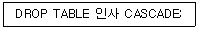
- 인사 테이블을 제거한다.
- 인사 테이블을 참조하는 테이블과 인사테이블을 제거한다.
- 인사 테이블이 참조중이면 제거하지 않는다.
- 인사 테이블을 제거할 지의 여부를 사용자에게 다시 질의한다.
(정답률: 80%)

2. Which of the following does not belong to the DDL statement of SQL?
- CREATE
- DELETE
- DROP
- ALTER
(정답률: 79%)
3. Which of the following is a linear list in that elements are accessed, created and deleted in a last-in-first-out order?
- Queue
- Graph
- Stack
- Tree
(정답률: 76%)
4. 시스템 카탈로그에 대한 설명으로 옳지 않은 것은?
- 시스템 카탈로그는 DBMS가 스스로 생성하고 유지하는 데이터베이스 내의 특별한 테이블들의 집합체이다.
- 일반 사용자도 시스템 카탈로그의 내용을 검색할 수 있다.
- 시스템 카탈로그 내의 각 테이블은 DBMS에서 지원하는 개체들에 관한 정보를 포함한다.
- 시스템 카탈로그에 대한 갱신은 데이터베이스의 무결성 유지를 위하여 사용자가 직접 갱신해야 한다.
(정답률: 81%)
5. 릴레이션 R1에 저장된 튜플이 릴레이션 R2에 있는 튜플을 참조하려면 참조되는 튜플이 반드시 R2에 존재해야 한다는 무결성 규칙은?
- 개체 무결성 규칙(Entity Integrity Rule)
- 참조 무결성 규칙(Referential Integrity Rule)
- 영역 무결성 규칙(Domain Integrity Rule)
- 트리거 규칙 (Trigger Rule)
(정답률: 80%)
6. 데이터베이스의 정의 중 다음 설명과 관계되는 것은?
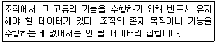
- Integrated Data
- Stored Data
- Operational Data
- shared Data
(정답률: 67%)
7. 정규화의 필요성으로 거리가 먼 것은?
- 데이터 구조의 안정성 최대화
- 중복 데이터의 활성화
- 수정, 삭제 시 이상현상의 최소화
- 테이블 불일치 위험의 최소화
(정답률: 82%)
8. 해싱에서 동일한 홈 주소로 인하여 충돌이 일어난 레코드들의 집합을 의미하는 것은?
- Overflow
- Bucket
- Synonym
- Collision
(정답률: 72%)
9. 트랜잭션의 연산은 데이터베이스에 모두 반영되든지 아니면 전혀 반영되지 않아야 한다는 트랜잭션의 특징은?
- Consistency
- Isolation
- Atomicity
- Durability
(정답률: 70%)
10. 데이터 중복으로 인해 릴레이션 조작 시 예상하지 못한 곤란한 현상이 발생한다. 이를 무엇이라고 하는가?
- normalization
- degree
- cardinality
- anomaly
(정답률: 75%)
11. 데이터베이스의 물리적 설계 옵션 선택 시 고려 사항으로 거리가 먼 것은?
- 스키마의 평가
- 응답시간
- 저장공간의 효율화
- 트랜잭션 처리도(throughput)
(정답률: 70%)
12. 순서가 A, B, C, D 로 정해진 입력 자료를 스택에 입력하였다가 출력한 결과로 가능한 것이 아닌 것은? (단, 왼쪽부터 먼저 출력된 순서이다.)
- D, C, B, A
- D, A, B, C
- A, B, C, D
- C, B, A, D
(정답률: 75%)
13. 다음 자료를 버블 정렬을 이용하여 오름차순으로 정렬할 경우 PASS 3의 결과는?
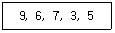
- 6, 3, 5, 7, 9
- 3, 5, 6, 7, 9
- 6, 7, 3, 5, 9
- 3, 5, 9, 6, 7
(정답률: 70%)
14. 관계 대수 및 관계 해석에 대한 설명으로 옳지 않은 것은?
- 관계 해석은 원하는 정보와 그 정보를 어떻게 유도하는가를 기술하는 절차적인 특성을 지닌다.
- 관계 해석과 관계 대수는 관계 데이터베이스를 처리하는 기능과 능력 면에서 동등하다.
- 관계 해석은 원래 수학의 프레디킷 해석에 기반을 두고 있다.
- 관계 대수는 릴레이션을 처리하기 위한 연산의 집합으로 피연산자가 릴레이션이고 결과도 릴레이션이다.
(정답률: 67%)
15. 병행제어의 로킹(Locking) 단위에 대한 설명으로 옳지 않은 것은?
- 데이터베이스, 파일, 레코드 등은 로킹 단위가 될 수 있다.
- 로킹 단위가 작아지면 로킹 오버헤드가 증가한다.
- 한꺼번에 로킹할 수 있는 단위를 로킹 단위라고 한다.
- 로킹 단위가 작아지면 병행성 수준이 낮아진다.
(정답률: 77%)
16. 개체-관계 모델의 E-R 다이어그램에서 사용되는 기호와 그 의미의 연결이 옳지 않은 것은?
- 사각형 - 개체 타입
- 삼각형 - 속성
- 선(링크) - 연결
- 마름모 - 관계 타입
(정답률: 78%)
17. 다음 트리를 Preorder 운행법으로 운행할 경우 다섯 번째로 탐색되는 것은?
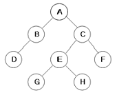
- C
- E
- G
- H
(정답률: 79%)
18. 릴레이션의 특징으로 적합하지 않은 것은?
- 중복된 튜플이 존재하지 않는다.
- 튜플 간의 순서는 별다른 의미를 가지지 않는다.
- 속성 간의 순서는 존재하며 중요한 의미를 갖는다.
- 모든 속성 값은 원자 값을 갖는다.
(정답률: 78%)
19. 데이터베이스의 특성으로 옳지 않은 것은?
- 질의에 대하여 실시간 처리 및 응답이 가능하도록 지원해 준다.
- 삽입, 삭제, 갱신으로 항상 최신의 데이터를 유지한다.
- 다수의 사용자가 동시에 이용할 수 있다.
- 데이터 참조 시 데이터 값에 의해서는 참조될 수 없으므로 위치나 주소에 의하여 데이터를 찾는다.
(정답률: 80%)
20. 스키마, 도메인, 테이블을 정의할 때 사용되는 SQL 문은?
- SELECT
- UPDATE
- MAKE
- CREATE
(정답률: 78%)
2과목: 전자 계산기 구조
21. 다음 [그림]에서 F를 A, B의 부울식으로 나타내면? (단, 그림에서 X는 선의 절단을 표시함)
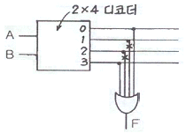
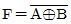
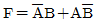
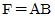
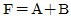
(정답률: 38%)
22. 전파지연(propagation delay)에 대한 설명으로 옳지 않은 것은?
- gate상의 operating speed는 propagation delay에 반비례한다.
- 전파지연은 ALU path에서 가장 짧은 delay를 말한다.
- 더 빠른 gate를 사용함으로써 propagation delay time을 줄일 수 있다.
- ALU의 parallel-adder에 전파지연을 줄이기 위해 carry lock ahead를 사용한다.
(정답률: 50%)
23. 불 함수식 F = (A＋B)·(A＋C)를 간략화 한 것은?
- F = A＋BC
- F = B＋AC
- F = A＋AC
- F = C＋AB
(정답률: 73%)
24. 다음 회로의 명칭은?
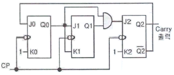
- 동기식 3진 카운터
- 동기식 4진 카운터
- 동기식 5진 카운터
- 동기식 6진 카운터
(정답률: 31%)
25. 폰 노이만(von neumann)형의 컴퓨터 연산장치가 갖는 기능에 속하지 않는 것은?
- 제어 기능
- 함수연산 기능
- 전달 기능
- 번지 기능
(정답률: 55%)
26. 짝수 패리티 비트의 해밍 코드로 0011011을 받았을 때 오류가 수정된 정확한 코드는?
- 0111011
- 0001011
- 0011001
- 0010101
(정답률: 40%)
27. 인터럽트 처리 루틴의 순서로 올바른 것은?
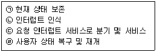
- (ㄱ)→(ㄴ)→(ㄷ)→(ㄹ)
- (ㄴ)→(ㄷ)→(ㄱ)→(ㄹ)
- (ㄴ)→(ㄱ)→(ㄹ)→(ㄷ)
- (ㄴ)→(ㄱ)→(ㄷ)→(ㄹ)
(정답률: 63%)
28. 인터럽트 서비스 루틴의 기능이 아닌 것은?
- 처리기 상태 복구
- 인터럽트 원인 결정
- 처리기 레지스터의 상태 보존
- 상대적으로 높은 레벨의 마스크 레지스터 클리어
(정답률: 55%)
29. 컴퓨터의 메모리 용량이 4096워드이고, 워드당 16bit의 데이터를 갖는다면 MAR은 몇 비트인가?
- 12
- 16
- 18
- 20
(정답률: 47%)
30. 제어장치를 구현하는 제어 방식이 아닌 것은?
- 상태 플립플롭 제어 방식
- RAM(random access memory) 제어 방식
- PLA(programmable logic array) 제어 방식
- 마이크로프로그램 제어 방식
(정답률: 45%)
31. Flynn의 컴퓨터 시스템 분류 제안 중에서 하나의 데이터 흐름이 다수의 프로세서들로 전달되며, 각 프로세서는 서로 다른 명령어를 실행하는 구조는?
- 단일 명령어, 단일 데이터 흐름
- 단일 명령어, 다중 데이터 흐름
- 다중 명령어, 단일 데이터 흐름
- 다중 명령어, 다중 데이터 흐름
(정답률: 54%)
32. 다중처리기에 의한 시스템을 구성할 때 고려사항이 아닌 것은?
- 메모리 충돌문제
- 메모리 용량문제
- 캐시 일관성 문제
- 메모리 접근의 효율성 문제
(정답률: 45%)
33. 미소의 콘덴서에 전하를 충전하는 원리를 이용하는 메모리로, 재충전(Refresh)이 필요한 메모리는?
- SRAM
- DRAM
- PROM
- EPROM
(정답률: 56%)
34. FETCH 메이저 상태에서 수행되는 마이크로오퍼레이션이 아닌 것은?
- MAR ← PC : PC의 값은 MAR로 이동
- PC ← PC＋b : PC의 값을 인스트럭션의 바이트 수 b만큼 증가
- IR ← MBR(OP) : MBR에서 연산(operation) 부분을 인스트럭션 레지스터로 옮김
- IEN ← 0 : 인터럽트를 disable 시킴
(정답률: 54%)
35. 캐시와 주기억장치로 구성된 컴퓨터에서 주기억장치의 접근 시간이 200ns, 캐시 적중률이 0.9, 평균 접근시간이 30ns일 때 캐시 메모리의 접근 시간은?
- 9ns
- 10ns
- 11ns
- 12ns
(정답률: 37%)
36. 메모리 관리 하드웨어(MMU)의 기본적인 역할에 대한 설명으로 옳지 않은 것은?
- 논리 주소를 물리 주소로 변환
- 허용되지 않는 메모리 접근을 방지
- 메모리 동적 재배치
- 가상 주소 공간을 물리 주소 공간으로 압축
(정답률: 49%)
37. 기억장치에 기억된 정보를 액세스하기 위하여 주소를 사용하는 것이 아니라 기억된 정보의 일부분을 이용하여 원하는 정보를 찾는 것은?
- Random Access Memory
- Associative Memory
- Read Only Memory
- Virtual Memory
(정답률: 63%)
38. CISC 구조와 RISC구조를 비교하였을 때, RISC 구조의 특징으로 틀린 것은?
- 명령어가 복잡하다.
- 프로그램 길이가 길다.
- 레지스터 개수가 많다.
- 파이프라인 구현이 용이하다.
(정답률: 42%)
39. 실행 사이클에서 다음 마이크로 연산이 나타내는 동작은?
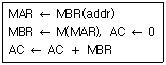
- ADD to AC
- OR to AC
- STORE to AC
- LOAD to AC
(정답률: 37%)
40. 버스 클록(clock)이 2.5GHz이고, 데이터 버스의 폭이 8비트인 버스의 대역폭에 가장 근접한 것은?
- 약 25GBytes/s
- 약 16GBytes/s
- 약 2.5GBytes/s
- 약 1.6GBytes/s
(정답률: 48%)
3과목: 운영체제
41. 운영체제에 대한 설명으로 옳지 않은 것은?
- 다중 사용자와 다중 응용프로그램 환경 하에서 자원의 현재 상태를 파악하고 자원분배를 위한 스케줄링을 담당한다.
- CPU, 메모리 공간, 기억 장치, 입/출력 장치 등의 자원을 관리한다.
- 운영체제의 종류로는 매크로 프로세서, 어셈블러, 컴파일러 등이 있다.
- 입출력 장치와 사용자 프로그램을 제어한다.
(정답률: 71%)
42. 운영체제의 성능평가 요인 중 다음 설명에 해당하는 것은?
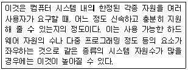
- Throughput
- Availability
- Turn around Time
- Reliability
(정답률: 64%)
43. 분산 운영체제에 대한 설명으로 옳지 않은 것은?
- 자원 공유
- 연산속도 향상
- 신뢰성 증대
- 보안성 향상
(정답률: 72%)
44. 은행가 알고리즘은 다음 교착상태 관련 연구 분야 중 어떤 분야에 속하는 가?
- 예방
- 발견
- 회피
- 회복
(정답률: 69%)
45. UNIX의 특징으로 옳지 않은 것은?
- 하나 이상의 작업에 대하여 백그라운드에서 수행 가능하다.
- Multi-Tasking은 지원하지만 Multi-User는 지원하지 않는다.
- 트리 구조의 파일 시스템을 갖는다.
- 이식성이 높으며 장치 간의 호환성이 높다.
(정답률: 75%)
46. 다중 처리기 운영체제 구성에서 주/종(Master/Slave) 처리기 에 대한 설명으로 옳지 않은 것은?
- 주 프로세서가 고장날 경우에도 전체 시스템은 작동한다.
- 비대칭 구조를 갖는다.
- 종 프로세서는 입출력 발생 시 주 프로세서에게 서비스를 요청한다.
- 주 프로세서는 운영체제를 수행한다.
(정답률: 73%)
47. 운영체제의 목적이 아닌 것은?
- 처리 능력의 향상
- 반환 시간의 최대화
- 사용 가능도 증대
- 신뢰도 향상
(정답률: 76%)
48. 보안 유지 방식 중 사용자의 신원을 확인한 후 권한이 있는 사용자에게만 시스템에 접근하게 하는 방법은?
- 운용보안
- 시설보안
- 사용자 인터페이스보안
- 내부보안
(정답률: 63%)
49. 메모리 관리 기법 중 Worst fit 방법을 사용할 경우 10K 크기의 프로그램 실행을 위해서는 어느 부분이 할당 되는가?
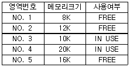
- NO.2
- NO.3
- NO.4
- NO.5
(정답률: 65%)
50. HRN 방식으로 스케줄링 할 경우, 입력된 작업이 다음과 같을 때 우선순위가 가장 높은 순서부터 차례로 옳게 나열한 것은?
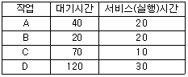
- B→A→C→D
- B→A→D→C
- C→D→A→B
- D→C→A→B
(정답률: 65%)
51. 초기 헤드 위치가 50 이며 트랙 0번 방향으로 이동 중이었다. 디스크 대기 큐에 다음과 같은 순서의 액세스 요청이 대기 중일 때, SSTF 스케줄링 사용하여 모든 처리를 완료하고자 한다. 가장 먼저 처리되는 트랙은? (단, 트랙 가장 안쪽 트랙 0, 가장 바깥쪽 트랙 200)
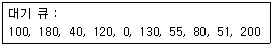
- 0
- 40
- 51
- 200
(정답률: 60%)
52. UNIX 시스템에서 커널의 수행기능에 해당하지 않는 것은?
- 프로세스 관리
- 기억장치 관리
- 입출력 관리
- 명령어 해석
(정답률: 68%)
53. RR(Round Robin) 스케줄링에 대한 설명으로 옳지 않은 것은?
- Time slice가 작을 경우 문맥교환이 자주 일어난다.
- Time Sharing System을 위해 고안된 방식이다.
- FCFS 알고리즘을 선점 형태로 변형한 기법이다.
- 우선순위는 “(대기시간＋서비스시간)/서비스시간”의 계산으로 처리한다.
(정답률: 65%)
54. 페이징 기법과 세그먼테이션 기법에 대한 설명으로 옳지 않은 것은?
- 페이징 기법에서는 주소 변환을 위한 페이지 맵 테이블이 필요하다.
- 페이지 크기로 일정하게 나누어진 주기억장치의 단위를 페이지 프레임이라고 한다.
- 페이징 기법에서는 하나의 작업을 다양한 크기의 논리적인 단위로 나눈 후 주기억장치에 적재시켜 실행한다.
- 세그먼테이션 기법을 이용하는 궁극적인 이유는 기억공간을 절약하기 위해서이다.
(정답률: 52%)
55. 파일 디스크립터(File Descriptor)에 대한 설명으로 옳지 않은 것은?
- 파일 관리를 위한 파일 제어 블록이다.
- 시스템에 따라 다른 구조를 가질 수 있다.
- 보조기억장치에 저장되어 있다가 파일이 개방될 때 주기억장치로 옮겨진다.
- 사용자의 직접 참조가 가능하다.
(정답률: 66%)
56. 프로세스 제어 블록을 갖고 있으며, 현재 실행 중이거나 곧 실행 가능하며, CPU를 할당받을 수 있는 프로그램으로 정의할 수 있는 것은?
- 워킹 셋
- 세그먼테이션
- 모니터
- 프로세스
(정답률: 62%)
57. UNIX에서 파일 내용을 화면에 표시하는 명령과 파일의 소유자를 변경하는 명령을 순서적으로 옳게 나열한 것은?
- dir, chown
- cat, chown
- type, chmod
- type, cat
(정답률: 67%)
58. 4개의 페이지를 수용할 수 있는 주기억장치가 있으며, 초기에는 모두 비어 있다고 가정한다. 다음의 순서로 페이지 참조가 발생할 때, FIFO 페이지 교체 알고리즘을 사용할 경우 페이지 결함의 발생 횟수는?
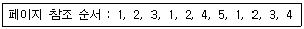
- 6회
- 7회
- 8회
- 9회
(정답률: 57%)
59. 프로세서의 상호 연결 구조 중 하이퍼 큐브 구조에서 각 CPU가 3개의 연결점을 가질 경우 총 CPU의 개수는?
- 2
- 3
- 4
- 8
(정답률: 69%)
60. 여러 사용자들이 공유하고자 하는 파일들을 하나의 디렉토리 또는 일부 서브트리에 저장해 놓고 여러 사용자들이 이를 같이 사용할 수 있도록 지원하기 위한 가장 효율적인 디렉토리 구조는?
- 비순환 그래프 디렉토리 구조
- 트리 디렉토리 구조
- 1단계 디렉토리 구조
- 2단계 디렉토리 구조
(정답률: 35%)
4과목: 소프트웨어 공학
61. 소프트웨어 개발 영역을 결정하는 요인 중 다음 사항과 관계되는 것은?
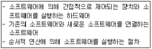
- 소프트웨어에 대한 기능
- 소프트웨어에 대한 성능
- 소프트웨어에 대한 제약조건
- 소프트웨어에 대한 인터페이스
(정답률: 59%)
62. 검증 검사 기법 중 개발자의 장소에서 사용자가 개발자 앞에서 행하는 기법이며, 일반적으로 통제된 환경에서 사용자와 개발자가 함께 확인하면서 수행되는 검사는?
- 동치 분할 검사
- 형상 검사
- 알파 검사
- 베타 검사
(정답률: 66%)
63. 사용자 인터페이스 설계 시 오류 메시지나 경고에 관한 지침으로 옳지 않은 것은?
- 메시지는 이해하기 쉬워야 한다.
- 오류로부터 회복을 위한 구체적인 설명이 제공되어야 한다.
- 오류로 인해 발생될 수 있는 부정적인 내용은 가급적 피한다.
- 소리나 색 등을 이용하여 듣거나 보기 쉽게 의미 전달을 하도록 한다.
(정답률: 73%)
64. 프로토타이핑의 모형에 대한 설명으로 옳지 않은 것은?
- 프로토타이핑 모형은 발주자나 개발자 모두에게 공동의 참조 모델을 제공한다.
- 사용자의 요구사항을 충실히 반영할 수 있다.
- 프로토타이핑 모형은 소프트웨어 생명주기에서 유지보수가 없어지고 개발 단계 안에서 유지보수가 이루어지는 것으로 볼 수 있다.
- 최종 결과물이 만들어지는 소프트웨어 개발 완료 시점에 최초로 오류 발견이 가능하다.
(정답률: 64%)
65. 소프트웨어공학에 대한 설명으로 거리가 먼 것은?
- 소프트웨어공학이란 소프트웨어의 개발, 운용, 유지 보수 및 파기에 대한 체계적인 접근 방법이다.
- 소프트웨어공학은 소프트웨어의 제품의 품질을 향상시키고 소프트웨어 생산성과 작업 만족도를 증대시키는 것이 목적이다.
- 소프트웨어공학의 궁극적 목표는 최대의 비용으로 계획된 일정보다 가능한 빠른 시일 내에 소프트웨어를 개발하는 것이다.
- 소프트웨어공학은 신뢰성 있는 소프트웨어를 경제적인 비용으로 획득하기 위해 공학적 원리를 정립하고 이를 이용하는 학문이다.
(정답률: 75%)
66. 바람직한 소프트웨어 설계 지침으로 볼 수 없는 것은?
- 모듈 간의 결합도는 강할수록 바람직하다.
- 모듈 간의 접속 관계를 분석하여 복잡도와 중복을 줄인다.
- 자료와 프로시저에 대한 분명하고 분리된 표현을 포함해야 한다.
- 설계는 소프트웨어 구조를 나타내어야 한다.
(정답률: 73%)
67. 소프트웨어 형상관리의 대상으로 거리가 먼 것은?
- 소스 레벨과 수행 형태인 컴퓨터 프로그램
- 숙련자와 사용자를 목표로 한 컴퓨터 프로그램을 서술하는 문서
- 프로그램 내에 포함된 자료
- 시스템 개발 비용
(정답률: 60%)
68. 소프트웨어 재공학은 어떤 유지보수 측면에서 소프트웨어 위기를 해결하려고 하는 방법인가?
- 수정(Corrective) 유지보수
- 적응(Adaptive) 유지보수
- 완전화(Perfective) 유지보수
- 예방(preventive) 유지보수
(정답률: 49%)
69. 다음 사항과 관계되는 결합도는?
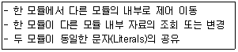
- Data Coupling
- Content Coupling
- Control Coupling
- Stamp Coupling
(정답률: 41%)
70. 소프트웨어 품질 목표 중 정해진 조건 아래에서 소프트웨어 제품의 일정한 성능과 자원 소요 정도의 관계에 관한 속성으로 시간 경제성, 자원 경제성 등의 품질 기준을 갖는 것은?
- Integrity
- Flexibility
- Efficiency
- Reliability
(정답률: 57%)
71. 객체지향 분석 기법 중 다음 설명에 해당하는 것은?
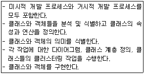
- Wirfs-Brock 방법
- Jacobson 방법
- Booch 방법
- Coad와 Yourdon 방법
(정답률: 44%)
72. 소프트웨어 재공학의 주요 활동 중 기존 소프트웨어 시스템을 새로운 기술 또는 하드웨어 환경에서 사용할 수 있도록 변환하는 작업을 의미 하는 것은?
- Analysis
- Migration
- Restructuring
- Reverse Engineering
(정답률: 48%)
73. 위험 모니터링(monitoring)의 의미로 가장 적절한 것은?
- 위험 요소를 인정하지 않는 것
- 위험요소들에 대하여 계획적으로 관리하는 것
- 위험 요소 징후들에 대하여 계속적으로 인지하는 것
- 첫 번째 조치로 위험을 피할 수 있도록 하는 것
(정답률: 69%)
74. 소프트웨어 재사용으로 인한 효과와 거리가 먼 것은?
- 시스템 구조와 구축방법의 교육적 효과
- 개발기간 및 비용 절약
- 개발 시 작성된 문서의 공유
- 새로운 개발 방법 도입의 용이성
(정답률: 70%)
75. 객체 지향 기법에서 캡슐화(encapsulation)에 대한 옳은 내용 모두를 나열한 것은?
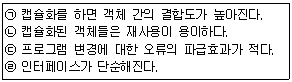
- (ㄱ), (ㄴ)
- (ㄱ), (ㄷ), (ㄹ)
- (ㄴ), (ㄷ), (ㄹ)
- (ㄱ), (ㄴ), (ㄷ), (ㄹ)
(정답률: 62%)
76. 객체 지향 기법에서 클래스에 속한 각각의 객체를 의미하는 것은?
- instance
- message
- method
- module
(정답률: 54%)
77. 자료흐름도의 구성요소가 아닌 것은?
- 소단위명세서
- 단말
- 프로세스
- 자료저장소
(정답률: 56%)
78. 블랙박스 테스트의 종류 중 프로그램의 입력 조건에 중점을 두고, 어느 하나의 입력 조건에 대하여 타당한 값과 그렇지 못한 값을 설정하여 해당 입력 자료에 맞는 결과가 출력되는 확인하는 테스트 기법은?
- Equivalence Partitioning Testing
- Boundary Value Analysis
- Comparison Testing
- Cause-Effect Graphic Testing
(정답률: 34%)
79. 소프트웨어 위기를 해결하기 위해 개발의 생산성이 아닌 유지보수의 생산성으로 해결하는 방법을 의미하는 것은?
- 소프트웨어 재사용
- 소프트웨어 재공학
- 클라이언트/서버 소프트웨어 공학
- 전통적 소프트웨어 공학
(정답률: 61%)
80. FTR의 검토 지침으로 거리가 먼 것은?
- 제품의 검토에만 집중하도록 한다.
- 논쟁과 반박을 제한해야 한다.
- 문제 영역을 명확히 표현해야 한다.
- 의제를 제한해서는 안 된다.
(정답률: 67%)
5과목: 데이터 통신
81. 다음은 데이터 통신 시스템에서 발생하는 잡음에 대한 설명이다. 어떤 잡음에 대한 설명인가?
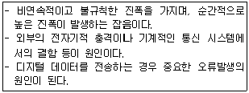
- 열잡음
- 누화잡음
- 충격잡음
- 상호변조 잡음
(정답률: 61%)
82. 피기백(Piggyback) 응답이란 무엇인가?
- 송신측이 대기시간을 설정하기 위한 목적으로 보낸 테스터 프레임용 응답을 말한다.
- 송신측이 일정한 시간 안에 수신측으로부터 ACK가 없으면 오류로 간주하는 것이다.
- 수신측이 별도의 ACK를 보내지 않고 상대편으로 향하는 데이터 전문을 이용하여 응답하는 것이다.
- 수신측이 오류를 검출한 후 재전송을 위한 프레임 번호를 알려주는 응답이다.
(정답률: 45%)
83. 자동재전송요청(ARQ)기법 중 데이터 프레임을 연속적으로 전송해 나가다가 NAK를 수신하게 되면, 오류가 발생한 프레임 이후에 전송된 모든 데이터 프레임을 재전송하는 것은?
- Selective-Repeat
- stop and wait
- Go-back-N
- Turbo Code
(정답률: 68%)
84. 다음이 설명하고 있는 디지털 전송 신호 부호화 방식은?
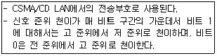
- Alternating Mark Inversion 코드
- Manchester 코드
- Bipolar 코드
- Non Return to Zero 코드
(정답률: 53%)
85. 다음이 설명하고 있는 다중화 방식은?
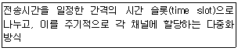
- 주파수 분할 다중화
- 동기식 시분할 다중화
- 코드 분할 다중화
- 파장 분할 다중화
(정답률: 72%)
86. 다음 중 A, B, C, D 문자 전송 시 수직 짝수 패리티 비트 검사에서 패리티 비트 값이 옳은 문자는?
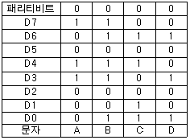
- A
- B
- C
- D
(정답률: 60%)
87. HDLC 프레임 형식 중 프레임의 종류를 식별하기 위해 사용 되는 것은?
- 정보영역
- 제어영역
- 주소영역
- 플래그
(정답률: 25%)
88. 점-대-점 링크뿐만 아니라 멀티 포인트 링크를 위하여 ISO에서 개발한 국제 표준 프로토콜은?
- HDLC(High Level Data Link Control)
- BSC(Binary Synchronous Control)
- SWFC(Sliding Window Flow Control)
- LLC(Logic Link Control)
(정답률: 62%)
89. IP address에 대한 설명으로 틀린 것은?
- 5개의 클래스(A, B, C, D, E)로 분류되어 있다.
- A, B, C 클래스만이 네트워크 주소와 호스트 주소 체계의 구조를 가진다.
- D 클래스 주소는 멀티캐스팅(multicasting)을 사용하기 위해 예약되어 있다.
- E 클래스는 실험적 주소로 공용으로 사용된다.
(정답률: 47%)
90. 양자화 잡음에 대한 설명으로 맞는 것은?
- PAM 펄스의 아날로그 값을 양자화 잡음이라 한다.
- PCM 펄스의 디지털 값은 양자화 잡음이라 한다.
- PAM 펄스의 아날로그 값과 양자화된 PCM 펄스의 디지털 값의 합을 양자화 잡음이라 한다.
- PAM 펄스의 아날로그 값과 양자화된 PCM 펄스의 디지털 값의 차이를 양자화 잡음이라 한다.
(정답률: 56%)
91. 아날로그 데이터를 디지털신호로 변환하는 변조방식은?
- ASK
- PSK
- PCM
- FSK
(정답률: 59%)
92. 경로 지정 방식에서 각 노드에 도착하는 패킷을 자신을 제외한 다른 모든 것을 복사하여 전송하는 방식은?
- 고정 경로 지정
- 플러딩
- 임의 경로 지정
- 적응 경로 지정
(정답률: 59%)
93. 주파수 분할 방식의 특징으로 틀린 것은?
- 사람의 음성이나 데이터가 아날로그 형태로 전송된다.
- 인접채널 사이의 간섭을 막기 위해 보호대역을 둔다.
- 터미널의 수가 동적으로 변할 수 있다.
- 주로 유선방송에서 많이 사용하고 있다.
(정답률: 45%)
94. IPv4에서 IPv6로의 천이하는데 사용되는 IETF에 의해 고안한 천이 전략 3가지에 해당하지 않는 것은?
- Dual Stack
- Tunneling
- Header Translation
- IP Control
(정답률: 54%)
95. 다음이 설명하고 있는 에러 체크 방식은?
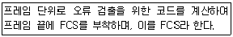
- LRC(Longitudinal Redundancy Check)
- VRC(Vertical Redundancy Check)
- CRC(Cyclic Redundancy Check)
- ARQ(Automatic Repeat Request)
(정답률: 62%)
96. ARP(Address Resolution Protocol)에 대한 설명으로 틀린 것은?
- 네트워크에서 두 호스트가 성공적으로 통신하기 위하여 각 하드웨어의 물리적인 주소문제를 해결해 줄 수 있다.
- 목적지 호스트의 IP주소를 MAC주소로 바꾸는 역할을 한다.
- ARP 캐시를 사용하므로 캐시에서 대상이 되는 IP주소의 MAC주소를 발견하면 이 MAC주소가 통신을 위해 바로 사용된다.
- ARP 캐시를 유지하기 위해서는 TTL값이 0 이 되면 이 주소는 ARP캐시에서 영구히 보존된다.
(정답률: 59%)
97. 다중접속방식에 해당하지 않는 것은?
- FDMA
- QDMA
- TDMA
- CDMA
(정답률: 46%)
98. 비트 방식의 데이터링크 프로토콜이 아닌 것은?
- HDLC
- SDLC
- LAPB
- SYN
(정답률: 55%)
99. 패킷교환에 대한 설명으로 틀린 것은?
- 전송데이터를 패킷이라 부르는 일정한 길이의 전송단위로 나누어 교환 및 전송한다.
- 패킷교환은 저장-전달 방식을 사용한다.
- 가상회선 패킷교환은 비연결형 서비스를 제공하고, 데이터 그램 패킷교환은 연결형 서비스를 제공한다.
- 메시지 교환이 갖는 장점을 그대로 취하면서 대화형 데이터 통신에 적합하도록 개발된 교환 방식이다.
(정답률: 59%)
100. OSI 7계층 중 응용 프로세스 간에 데이터 표현상의 차이에 상관없이 통신이 가능하도록 독립성을 제공(코드변환, 데이터 압축 등)하는 계층은?
- 물리계층
- 표현계층
- 데이터 링크계층
- 세션계층
(정답률: 49%)
이유는 FOREIGN KEY 제약 조건이 설정된 테이블이 있을 경우, 해당 테이블을 참조하는 다른 테이블이 있을 수 있다. 이 경우, 인사 테이블을 제거하기 위해서는 먼저 인사 테이블을 참조하는 다른 테이블들의 FOREIGN KEY 제약 조건을 삭제해야 한다. 따라서 인사 테이블을 참조하는 테이블과 함께 인사 테이블도 제거된다.